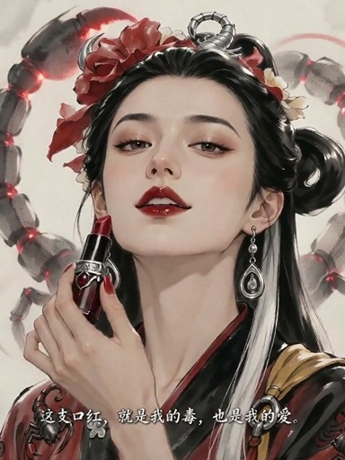
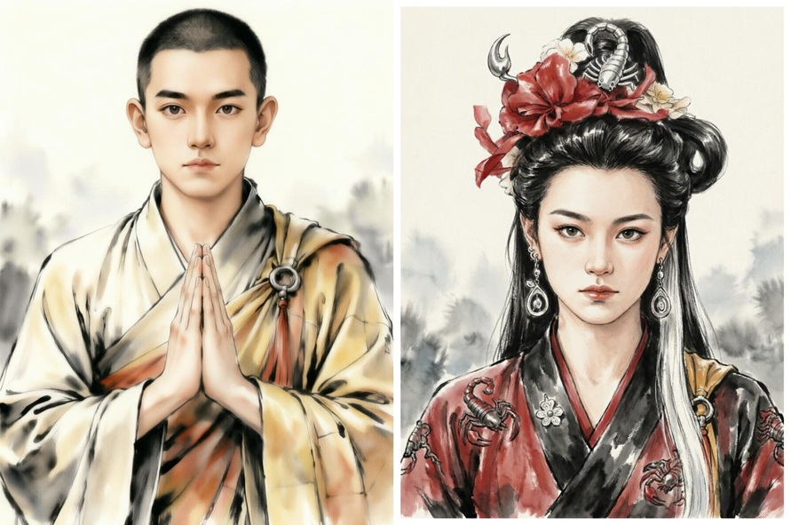
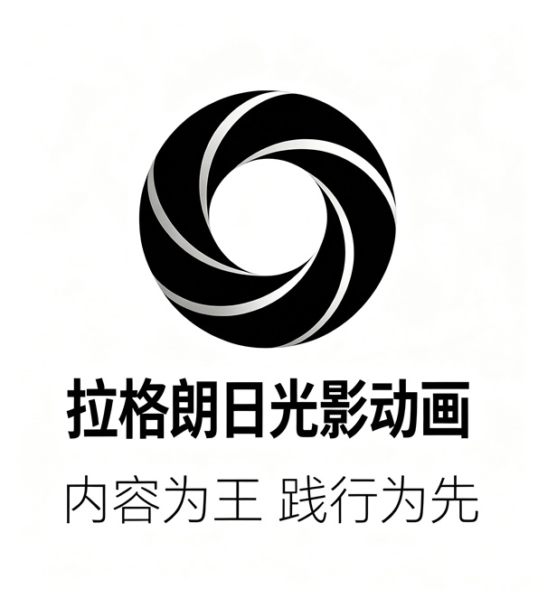
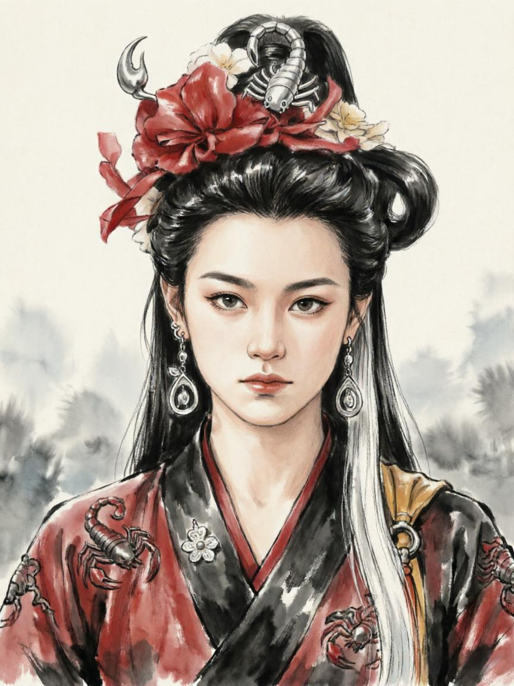

第三部 《蝎子精·烈焰焚心》 相关阅读文案
⏩欢迎阅读，批评指正。
🌈尾钩刻印：一个将改写影史的六秒钟
https://ofirm-git.github.io/jcj/wgkyjtwhch
点击，看github备份文案，精彩镜头！
⚡蝎子精的高光镜头太多了，这个角色值得你去研究，去理解她，去共情她，去爱她...
⏩“尾钩刻印”、“文化出海”，或许，我们真正的文化出海，就从蝎子精开始。再也不用为了NL被嘲笑，而尴尬万分。
🌈尾钩刻印：一个将改写影史的六秒钟《蝎子精·烈焰焚心》
https://weibo.com/ttarticle/p/show?id=2309405338917359976462
点击，看微博文案！
⚡上面的github如果你无法访问，就看微博版的，这个版本页面只是没有那么漂亮。
⏩“尾钩刻印”、“文化出海”，或许，我们真正的文化出海，就从蝎子精开始。再也不用为了NL被嘲笑，而尴尬万分。
🌈金蝉子前传和蝎子精之精简故事线，前三部电影概略
https://weibo.com/ttarticle/p/show?id=2309405337742677770370
点击，看微博文案，前三部电影概略
⚡理解蝎子精的人物弧光，需要前三部电影放在一起看才行。
⏩欢迎阅读，初步感受东方仙妖爱情的极致，感受东方神话爱情图腾的魔力。
🌈西游·金蝉劫｜蝎子精：东方神话宇宙里，一场以情证道的妖王史诗
https://weibo.com/ttarticle/p/show?id=2309405337973381267586
点击，查看文博文案，与编剧同频
⚡ ——编剧视角，对读者疑问和故事的再解读，你会彻底明白，何为东方神话的大女主史诗？
⏩“蝎子精”大概率会是东方神话宇宙中，人物弧光最浓烈的女性向IP，女性情感向图腾。
🌈《西游金蝉劫》蝎子精、金蝉子等故事线全网查重分析报告
https://weibo.com/ttarticle/p/show?id=2309405338539117641741
点击，看微博查重报告文案
⚡ ——基于《金蝉子前传渡缘劫》和《蝎子精女妖王》《蝎子精烈焰焚心》三部剧本文本。
⏩百分百独创故事线，西游记之蝎子精爱情线弧光最优解，版权已固，其他路径或者擦边，都将会是网友眼中的东施效颦！
🌈哪吒票房成功的根本原因，《金蝉子前传渡缘劫》能否复制票房神话？
https://mp.weixin.qq.com/s/AWA0G4vtnBbR_YtA76jbXw
点击，看公众号之 哪吒票房成功的根本原因，《金蝉子前传渡缘劫》能否复制票房神话？
⚡ 深度对比分析，哪吒成功的根本性基础原因，理性看看《渡缘劫》的成色到底如何？
⏩欢迎阅读并给出合理建议
🌈《西游・金蝉劫》IP 公开参考阅读清单。 重要阅读提醒，避免认知错位
https://weibo.com/ttarticle/p/show?id=2309405339116400410737
点击，看微博文案，阅读指引
⚡ 这是给合作方的快速阅读指引，用于理解整个IP的概况，理解故事细节，人物性格等
⏩对于动画制作，商业开发，认知对齐是最重要的事情。



